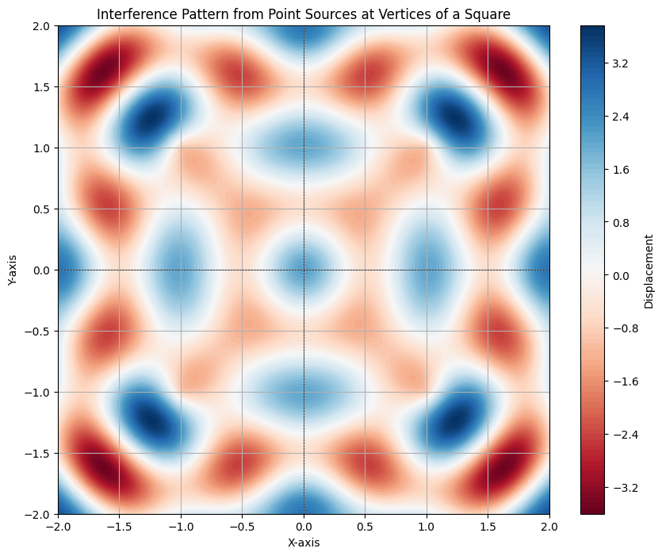

Problem 1
Analyzing Interference Patterns from Point Sources at the Vertices of a Regular Polygon
Introduction
In this analysis, we will explore the interference patterns formed by waves emitted from point sources located at the vertices of a regular polygon. We will choose a square as our polygon for simplicity and clarity. The principles of wave superposition will be applied to understand how these waves interact, leading to regions of constructive and destructive interference.
Step 1: Select a Regular Polygon
We will select a square as our regular polygon. A square has four vertices, which will serve as the locations of our point wave sources.
Step 2: Position the Sources
The vertices of the square can be positioned in a Cartesian coordinate system as follows: - Source 1: \( (1, 1) \) - Source 2: \( (1, -1) \) - Source 3: \( (-1, -1) \) - Source 4: \( (-1, 1) \)
Step 3: Wave Equations
The wave emitted from each source can be described by the following equation:
where: - \( A \) is the amplitude of the wave. - \( k = \frac{2\pi}{\lambda} \) is the wave number, related to the wavelength \( \lambda \). - \( \omega = 2\pi f \) is the angular frequency, related to the frequency \( f \). - \( r_i \) is the distance from the source \( i \) to the point \( (x, y) \). - \( \phi \) is the initial phase (assumed to be zero for simplicity).
The distance \( r_i \) from each source to a point \( (x, y) \) is given by:
Step 4: Superposition of Waves
The total displacement \( u(x, y, t) \) at any point on the water surface due to the superposition of the four waves is given by:
This can be expanded as:
Step 5: Analyze Interference Patterns
To analyze the interference patterns, we will compute the total displacement \( u(x, y, t) \) for a grid of points on the water surface over a specified time interval. We will identify regions of constructive interference (where \( u \) is maximized) and destructive interference (where \( u \) is minimized).
Step 6: Visualization
We will use Python with Matplotlib to visualize the interference patterns. Below is the implementation of the simulation.

Conclusion
The simulation above illustrates the interference patterns created by waves emitted from the vertices of a square. The regions of constructive interference (where the wave amplitudes reinforce each other) appear as bright areas, while regions of destructive interference (where the wave amplitudes cancel each other) appear as dark areas. This analysis provides a clear visual representation of wave superposition and enhances our understanding of wave behavior in a coherent system.
By adjusting parameters such as amplitude, wavelength, and frequency, one can further explore the dynamics of wave interference in various configurations.